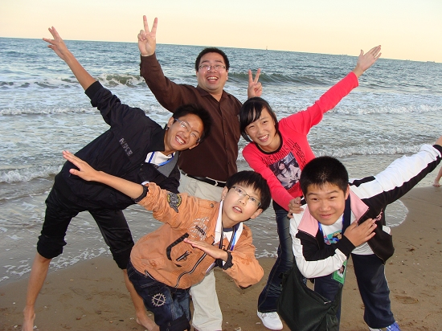
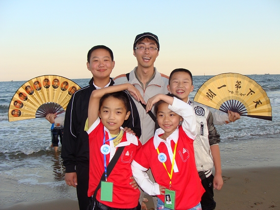
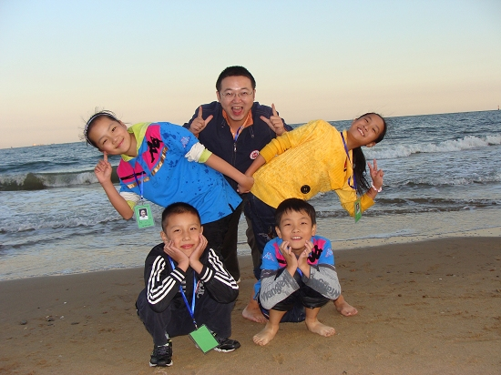

南通包揽全国五子棋校际交流活动中小学组冠军
#1 南通包揽全国五子棋校际交流活动中小学组冠军作者：有志青年 发表时间：2010-9-24 10:26:21
中秋月圆之时，港闸区三所学校共计17人一行在秦皇岛奋力拼杀，最终在国家体育总局棋牌运动管理中心主办，秦皇岛市体育局承办的“全国中小学五子棋校际交流赛”中，越江中学获得中学组团体冠军，港闸区实验小学获得小学组团体冠军，唐闸小学获得小学组团体季军。
此次比赛是继八月的全国青少年五子棋锦标赛后，我区选手的又一次集体亮相，小选手们乘坐近16小时的火车，赛前第一天晚上九点抵达河北秦皇岛，第二天上午八点就投入到紧张而激烈的比赛当中，在为期两天半的比赛中，小选手们不仅取得了优异成绩，赛风赛纪更是受到组委会的一致好评，并捕获一大批热情的粉丝。
中学组冠军：南通市越江中学

小学组冠军：南通市港闸区实验小学

季军：南通市唐闸小学
［此帖子已被 有志青年 在 2010-9-24 12:42:07 编辑过］
［ 被感动的人 于 2010-9-26 21:17:57 时花20金币送鲜花一朵］
#2 Re:南通包揽全国五子棋校际交流活动中小学组冠军作者：屏蔽 发表时间：2010-9-24 11:36:04
一般来说小棋手的技战术还未成形，能保持如此强势的发挥确实值得称赞。#3 Re:南通包揽全国五子棋校际交流活动中小学组冠军作者：失落刀 发表时间：2010-9-24 12:05:29
这几张照片太霸道了。#4 Re:南通包揽全国五子棋校际交流活动中小学组冠军作者：weigui 发表时间：2010-9-24 15:25:57
祝贺！！！！
#5 Re:南通包揽全国五子棋校际交流活动中小学组冠军作者：被感动的人 发表时间：2010-9-24 16:37:31
祝贺！!!!!!#6 Re:南通包揽全国五子棋校际交流活动中小学组冠军作者：小调皮 发表时间：2010-9-25 10:45:13
嘻嘻，高兴啊!加油喽!!!
#7 Re:南通包揽全国五子棋校际交流活动中小学组冠军作者：黄药师 发表时间：2010-9-25 10:45:13
额。有志忘记注明了，以上造型的设计者——黄药师。

#8 Re:南通包揽全国五子棋校际交流活动中小学组冠军作者：小调皮 发表时间：2010-9-25 10:50:10
尤其是热情小记者堵塞陈老师的通道，嘿嘿!!［ 黄药师 于 2010-9-25 10:53:11 时奖励此帖[金币加 100 威望加1］
#9 Re:南通包揽全国五子棋校际交流活动中小学组冠军作者：黄药师 发表时间：2010-9-25 10:53:40
楼上是谁啊？？？？#10 Re:南通包揽全国五子棋校际交流活动中小学组冠军作者：小调皮 发表时间：2010-9-25 10:55:36
嘿嘿，小褚子我啊!#11 Re:Re:南通包揽全国五子棋校际交流活动中小学组冠军作者：黄药师 发表时间：2010-9-25 11:24:28
引用：
原文由 小调皮 发表于 2010-9-25 10:55:36 :
嘿嘿，小褚子我啊!
 。。。。。。
。。。。。。#12 Re:Re:Re:南通包揽全国五子棋校际交流活动中小学组冠军作者：小兵 发表时间：2010-9-25 12:10:05
引用：
原文由 黄药师 发表于 2010-9-25 11:24:28 :引用：
原文由 小调皮 发表于 2010-9-25 10:55:36 :
嘿嘿，小褚子我啊!
#13 Re:南通包揽全国五子棋校际交流活动中小学组冠军作者：被感动的人 发表时间：2010-9-26 21:18:13
祝贺！！！！！！！！！！！#14 Re:南通包揽全国五子棋校际交流活动中小学组冠军作者：安娜制作所 发表时间：2010-9-27 15:58:14
贺喜